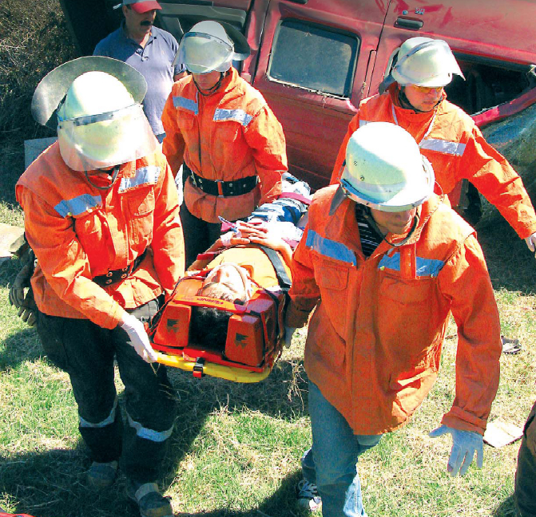

Con el propósito de dar cumplimiento a nuestras obligaciones, la Quinta Compañía posee una dotación que en la actualidad alcanza los 123 integrantes, en los cuales existe una amplia gama de profesionales calificados en distintas disciplinas, tanto en el área salud, área científica como en el área humanista, los que a su vez desempeñan variadas funciones dentro de nuestra institución.
La capacitación se describe como un pilar de nuestra organización, para lo cual, la Quinta Compañía cuenta dentro de su staff a instructores pertenecientes a la Academia Nacional de Bomberos, los cuales mantienen las exigencias curriculares de nuestros integrantes. La implementación se divide en cuatro grandes áreas.
La instrucción básica está enfocada a la formación de cadetes, a través de la Brigada Juvenil donde se enseñan conocimientos básicos bomberiles, como también un constante adoctrinamiento en los valores de disciplina y servicio a la comunidad.
Una vez ascendido a Brigadier, la capacitación es enfocada a técnicas de extinción de incendios y manejo de herramientas. Posteriormente, se capacita en técnicas de rescate de personas y manejo básico de trauma. Por último, se mantiene un currículo optativo de cursos que amplían el conocimiento del voluntario, tales como, investigación de incendios, manejo de materiales peligrosos, entre otros.
Los Voluntarios de la Quinta, en la actualidad son los siguientes:
| Integrantes de Compañía 2018 |
| VOLUNTARIOS HONORARIOS
001 SALDES SANTUBER ARMAN
002 URIARTE PARRA JUAN
003 GRANDON INDA LIENTUR
004 ETCHEVERRY SCHRÖER JAVIER
005 RETAMALES LEIVA PATRICIO
006 CRAVERO SILVA OSCAR
007 VILLAGRA CABELLO ANSELMO
008 FERRER LEIVA JOSE LUIS
009 ATHENS MOSCOSO JAIME
010 AYALA CISTERNA LEONIDAS
011 LAMIG FRITZ GUSTAVO
012 OGALDE GOMEZ JORGE – DIRECTOR DE COMPAÑIA
013 BARRUETO DECAP RENATO
014 CHAVEZ TORRES JORGE
015 RETAMALES LEIVA JORGE
016 SALGADO RIOS NELSON
017 CASTRO HERRERA FRANCISCO
018 TOLEDO CAMPOS JORGE
019 CASTRO HERRERA PABLO
020 RAMÍREZ CUITIÑO ÁLVARO
021 PEDRERO TEJO REINALDO
022 VEGA VILLEGAS LUIS
023 ARREDONDO SANDOVAL MAURICIO
024 MORA DIEZ SERGIO
025 VALLEJOS TORRES JUAN CARLOS
026 SALDES SOSA MARIO
027 CERLIANI MOCOCAIN PABLO
028 SOSA GONZALEZ JUAN ALBERTO
029 DURAN CABALLERO CLAUDIO
030 MELLADO TOLEDO OSCAR
031 ARAYA FRITIS LISANDRO
032 LUENGO ORTIZ PEDRO
033 PROVOSTE LAGOS DAVID – MEDICO DE COMPAÑIA
034 VERA DONOSO LUIS
035 VILLAGRA VEGA MARIO
036 CEBALLOS ARIAS CLAUDIO
037 DUFFAU GALVEZ NELSON
038 MELLO MELO LEONARDO
039 AGUILERA RIQUELME GABRIEL
VOLUNTARIOS ACTIVOS
040 JIMENEZ DORREGO FRANCISCO
041 HERNANDEZ ZUÑIGA FELIPE
042 MUÑOZ MADRID FERNANDO
043 OBREGON VALVERDE PATRICIO
044 ALBORNOZ LLANOS PATRICIO – TENIENTE 2° DE COMPAÑIA
045 GONZALEZ SILVA JORGE
046 YAÑEZ ASTUDILLO ROBERT
047 SANDOVAL VELASQUEZ JAIME – TESORERO DE COMPAÑIA
048 OLIVEROS HENRIQUEZ MAURICIO – CAPITÁN DE COMPAÑIA
049 MENDOZA BASTIAS ARNOLDO
050 SEPULVEDA CARRILLO LUIS
051 NORAMBUENA CONEJEROS CRISTIAN
052 INDO AGUAYO DANILO
053 ENRIQUIZ VALENZUELA VICTOR
054 PEDRERO TEJO RODRIGO
055 SARZOSA PEÑA JUAN CARLOS
056 LEAL RETAMALES RICARDO
057 HERNANDEZ ZUÑIGA NICOLAS
058 ODGERS CANALES ALEJANDRO
059 CHAVEZ GALCERAN IVAN
060 FERNANDEZ MADRID JUAN PABLO
061 GARRIDO RETAMAL RODOLFO
062 CONTRERAS YAÑEZ OSCAR
063 MUÑOZ SUTTER PAUL
064 MUÑOZ SUTTER FRODY
065 CACERES GAJARDO JULIO
066 AYALA PARADA LEONIDAS
067 TORRES RAMOS GONZALO
068 QUEZADA QUIJON MARCELO
069 MIRANDA SANDOVAL MARIO
070 BASTIAS TEJOS FELIPE
071 SALDIVIA NORAMBUENA JONNATHAN
072 MALDONADO BURGOS OSCAR
073 CLAVERIA JARAMILLO ABNER – AYUDANTE 1º DE COMPAÑIA
074 VERA TORRES FERNANDO
075 VERA TORRES LUIS
076 OBREGON SANDOVAL NICOLAS
077 HERNANDEZ ZUÑIGA MATIAS
078 VILLEGAS BUSTOS MATIAS .- TENIENTE 1° DE COMPAÑIA
079 AGUILERA DURAN CESAR
080 TURNER PANTOJA SEBASTIAN
081 LAMIG CARRIÓN KLAUS – TENIENTE 4° DE COMPAÑIA
082 MELLADO LILLO SIMÓN
083 AYALA PARADA EMILIO
084 CACERES ALARCON ALEX
085 HERNANDEZ ZUÑIGA JOAQUIN
086 ECHEVERRIA SANDOVAL FERNANDO
087 VEGA LARA FRANCISCO – SECRETARIO DE COMPAÑIA
088 CEA VALVERDE ALVARO
089 SANTUBER TEJO LORENZO
090 VILLARROEL ZANZANA ELÍAS
091 CACERES ALARCON GONZALO
092 OBREGÓN SANDOVAL FELIPE
093 RIVERA ROJAS NICOLÁS
094 CONTADOR SÁNCHEZ PEDRO – AYUDANTE 2º DE COMPAÑIA
095 GUTIÉRREZ VALLADARES CRISTIAN – AYUDANTE 3º DE COMPAÑIA
096 FARÍAS DÍAZ ALEJANDRO
097 IDE RIVERA CARLOS
098 SAAVEDRA BUSTOS EDUARDO
099 PEDRERO SÁNCHEZ BENJAMÍN
100 SOSA HIDALGO JUAN ESTEBAN
101 CEBALLOS QUEZADA FRANCISCO – AYUDANTE 3° DE COMPAÑIA
102 CORVALÁN RETAMAL MATÍAS – INTENDENTE DE COMPAÑIA
103 VILLAGRA IRRIBARRA SEBASTIÁN
104 SANHUEZA ARIAS JOSE
105 DELGADO CISTERNA IGNACIO
106 MORA SANHUEZA FELIPE
107 CEBALLOS QUEZADA NICOLÁS
108 REYES JOFRÉ MARCELO
109 TOLEDO MAUREIRA FERNANDO
110 IBARRA HERRERA MATÍAS
ASPIRANTES DE COMPAÑIA
111 LAGOS LAGOS DANIEL
112 CORONA VEJAR NICOLÁS
113 MALDONADO MUÑOZ JUAN PABLO
VOLUNTARIOS EN CANJE
114 VIDAL OYARZO ANDRES (1. ”GERMANIA” FRUTILLAR)
115 PÉREZ MUÑOZ DANIEL (2. ”GERMANIA” PUERTO MONTT)
CUARTELERO DE COMPAÑÍA
38-5 VILCHES URRUTIA REINALDO
|